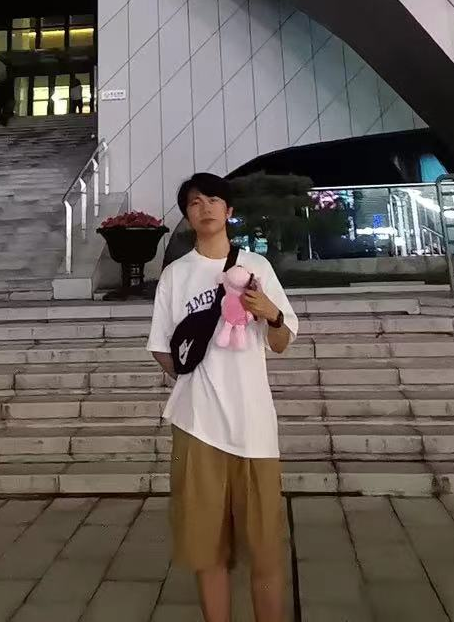

WiDistill: Distilling Large-scale Wi-Fi Datasets with Trajectory Matching
First author
arXiv, 2024
Dataset distillation with trajectory matching for efficient training and cross-user generalization in Wi-Fi sensing.
I am an M.S. student in Information Physics and Computing at the University of Tokyo, affiliated with the Inami–Monnai Lab at RCAST. I received my B.Eng. in Artificial Intelligence from Xidian University, where I was part of the Turing Program.
My research interests span multimodal and computational sensing, human sensing, machine learning, and robotics/HCI. I am currently exploring sub-THz/photoacoustic sensing for non-contact human sensing and imaging. My previous work includes Wi-Fi CSI, wearable IMUs, computer vision, and RF signal processing.

First author
arXiv, 2024
Dataset distillation with trajectory matching for efficient training and cross-user generalization in Wi-Fi sensing.

Second author
IEEE Transactions on Cognitive Communications and Networking
Automatic modulation classification through multi-level wavelet decomposition and attention.

Second author
IEEE International Conference on Acoustics, Speech and Signal Processing
Automatic modulation classification with adaptive correction, multi-scale features, and feature fusion.
Oct. 2026 to Oct. 2028 (expected)
M.S. in Information Science and Technology
Department of Information Physics and Computing
Sep. 2020 to Jul. 2024
B.Eng. in Artificial Intelligence, Turing Program
Selected among 40 students from 1,450 undergraduates. GPA: 3.7/4.0.
2026–2028
Inami–Monnai Lab, RCAST, The University of Tokyo
Exploring sub-THz/photoacoustic sensing, non-contact human sensing and imaging, and machine learning for physical sensing systems.
2023–2026
Wi-Fi CSI, wearable IMUs, computer vision, human identification, 3D pose estimation, and dataset distillation.
2021–2023
Key Laboratory of Intelligent Perception and Image Understanding
Deep learning and time-frequency representations for robust automatic modulation classification.

Silver medal45th out of 936 teams (top 5%), 2023
The competition focused on detecting weak, long-lasting gravitational-wave signals from rapidly spinning neutron stars in noisy data. This search could help scientists understand the structure of these extreme stars.
Hosted on Kaggle by the European Gravitational Observatory.
Competition
I keep a small archive of older posts about learning and everyday life.
Read the old blog